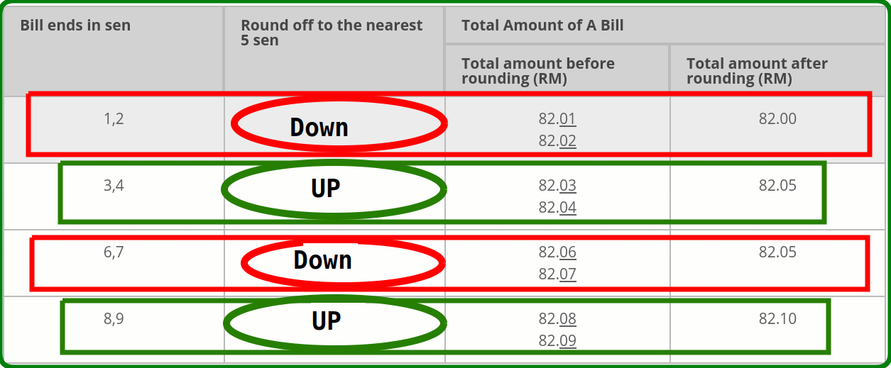

POS Advance Roundoff amount Digits and Point based
Key Features of the module:
Need of this module: In east asign country is having banking rule for ronding with up and down in points so this module is very usefull in that case.
Using this module you can easily assign Rounding for Digit based and point based.
Compatible with both community and enterprise version of odoo.
Userfrendly and easy to use.
Why needed this module?:
The Rounding Mechanism only applies to the total amount of a bill and not on individual items. In the Rounding Mechanism exercise, the total amount of a bill which ends in 1, 2, 6 and 7 sen will be rounded down while the total bill which ends in 3, 4, 8 and 9 sen will be rounded up to the nearest multiple of 5 sen.
He implementation of the Rounding Mechanism brings benefits to both businesses and customers. Businesses will be able to save on handling costs and for customers, it will make payment faster and more convenient.
The table below illustrates how the Rounding Mechanism works:

Here for use this module, enable rounding from POS configuration and enable rounding for point base rounding and digit base rounding.
Create POS order and add product quantity.
Here check total order amount without rounding.
Here after enable rounding button, check total order amount with rounding.
check rounding functionality in POS Receipt.
Here you can check rounding amount in POS Order with rounding amount.
Rounding Amount entry in account after close sesson and click on button "Validate closing & post entry". Check View and Screen.
POS Rounding Configuration:
POS Rounding Configuration: Digits Base
POS Rounding Configuration: Points Base
NOTE: You can ask on contact number if you need any help for this module. we can help for only this module. if you need to resolve error with another module that it take an extra changes.
Contact us for support, query, customization, implementation, Odoo Version Migration